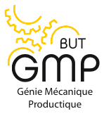

Je suis Alessandra Jolait et ceci est ma page de présentation. Je recherche du travail dans la production et la modélisation 3D.
Je cherche plus précisément un bureau d'étude pour pouvoir faire une alternance en deuxième année de BUT GMP. Je n'ai que 19 ans mais j'ai déjà été dans le monde du travail.

Sur ce site, vous pourrez trouver mon parcours scolaire, de l'obtention du brevet jusqu'à maintenant.
Il y a également mes centres d'intérêts hors du travail, je précise étant donné que la modélisation 3D fait partie de mes passions et j'ai décidé d'en faire mon travail, je suis donc une passionnée.
Pour finir, les moyens de me contacter. Mon CV et ma lettre de motivation sont présentes, tout comme mon e-mail et mon numéro de téléphone.
J'ai un appartement sur Saint-Quentin et je peux loger entre Soissons et Laon. Ayant le permis, je suis prête à bouger parmis ces secteurs là.